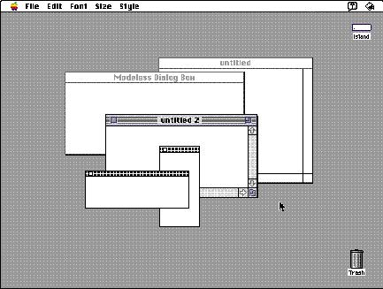
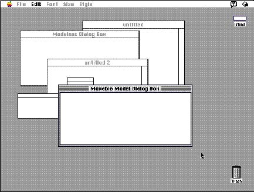

|
Window Display OrderWindows always appear on the desktop in a certain hierarchy of layers. Each application has its own stack of windows within which different types of windows appear in a specified order.Standard document windows and modeless dialog boxes appear on the lowest level, closest to the desktop and farthest away from the user. Modeless dialog boxes follow the same ordering guidelines as document windows; they typically appear on top of an open document window just as if they were new document windows. Figure 5-12 shows the initial order of document windows and modeless dialog boxes on the desktop; this order remains the same until the user activates the modeless dialog box or one or more of the windows. Figure 5-12 Display order of document windows and modeless dialog boxes
Floating windows, such as utility windows and palettes, appear on top of other document windows and modeless dialog boxes, as shown in Figure 5-13. Figure 5-13 Adding floating windows to the desktop  When a user chooses a command that displays either a modal dialog box or a movable modal dialog box, that dialog box appears on top of all modeless windows and utility windows. All the open windows from an application that appear beneath a modal dialog box are frozen in place and inactive, but the user can move the open windows by pressing the Command key and dragging them (one by one) to other positions on the screen (the open windows remain inactive, but the user can now view their contents). To view windows appearing beneath a movable modal dialog box, the user can move the movable modal dialog box (rather than moving the other windows) to another position on the screen. Figure 5-14 shows a movable modal dialog box on top of all other windows. Figure 5-14 Adding a movable modal dialog box to the desktop  Note that the user cannot switch to another application when a fixed-position modal dialog box appears on the screen. Only movable modal dialog boxes allow the user to switch to another application without first dismissing the dialog box. See Chapter 6, "Dialog Boxes," beginning on page 175 for more details on the design and behavior of dialog boxes. |